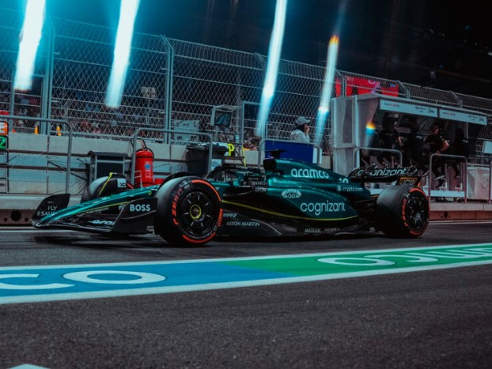
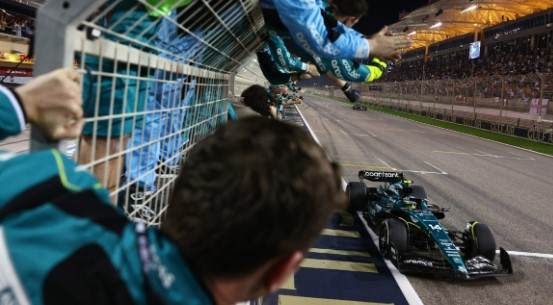
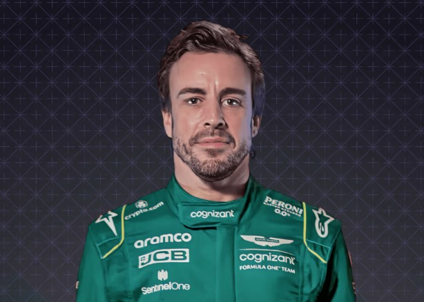
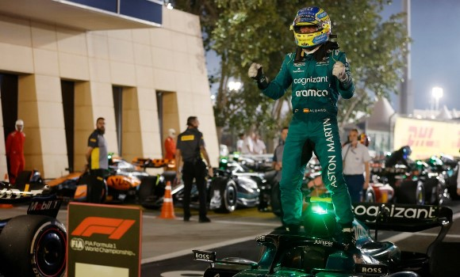
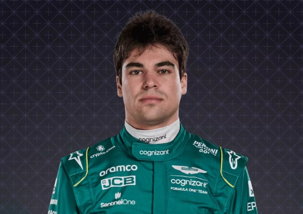
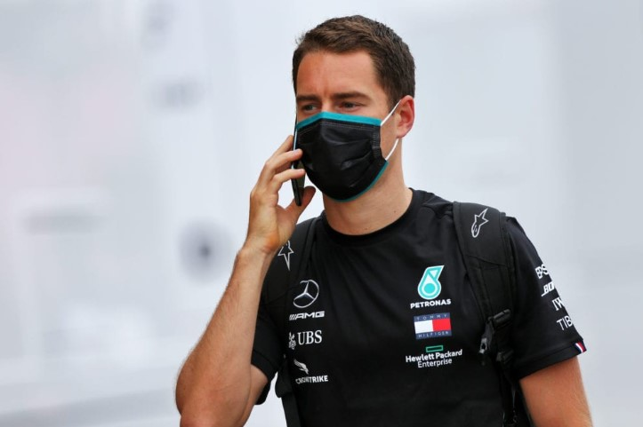
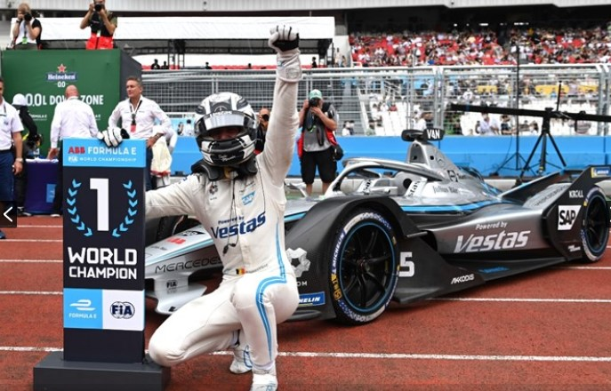
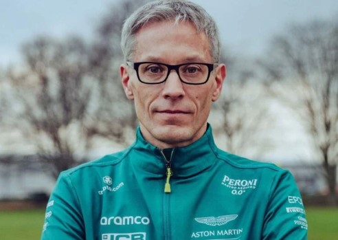
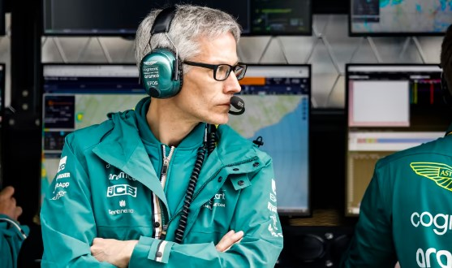

Aston Martin Aramco Cognizant F1 Team
 - Base: Silverstone, United Kingdom
- Team Chief:Mike Krack
- Technical Chief:Dan Fallows
- Chassis:AMR23
- Power Unit: Mercedes
- First Team Entry:2018
- World Championships: N/A
- Highest Race Finish: 1st
- Pole Positions: 1
- Fastest Laps: N/A
Aston Martin is a British car manufacturer that has participated in Formula One in various forms and is currently racing in F1 under the Aston Martin Aramco Cognizant F1 Team name. The company first participated in Formula One during the 1959 season where they debuted the DBR4 chassis using their own engine but it failed to score any points. They continued to perform poorly through the 1960 season, once again failing to score any points. As a result, Aston Martin decided to leave Formula One after 1960.A commercial rebranding of the Racing Point F1 Team resulted in the team's return as Aston Martin in 2021, utilising customer Mercedes power units. In 2026, the team will begin using Honda power units as part of a works partnership with the Japanese manufacturer. The team, owned by Lawrence Stroll, has Fernando Alonso and Lance Stroll as their race drivers beginning with the 2023 season. The team is headquartered in Silverstone and has previously raced under various different names, starting with Jordan Grand Prix in 1991.
Race Drivers:
- Fernando Alonso :  
- Lance Stroll : 
fernando Alonso Díaz (Spanish pronunciation: [feɾˈnando aˈlonso ˈði.aθ] (listen); born 29 July 1981) is a Spanish racing driver currently competing for Aston Martin in Formula One. He won the series' World Drivers' Championship in 2005 and 2006 with Renault, and has also driven for McLaren, Ferrari, and Minardi. With Toyota, Alonso won the 24 Hours of Le Mans twice, in 2018 and 2019, and the FIA World Endurance Championship in 2018–19. He also won the 24 Hours of Daytona with Wayne Taylor Racing in 2019. As of 2022, Alonso is the only driver to win both the F1 World Drivers' Championship and the World Endurance Championship, even if the World Sportscar Championship is included in WEC.Born in Oviedo, Asturias to a working-class family, Alonso began kart racing at the age of three and achieved success in local, national, and world championships

Lance Strulovitch (born 29 October 1998), better known as Lance Stroll, is a Canadian and Belgian racing driver competing under the Canadian flag in Formula One. He has driven for Aston Martin since 2021, having previously driven for Williams and Racing Point. He was Italian F4 champion in 2014, Toyota Racing Series champion in 2015, and 2016 FIA European Formula 3 champion. He was part of the Ferrari Driver Academy from 2010 to 2015. He achieved his first podium finish, a 3rd place, at the 2017 Azerbaijan Grand Prix, becoming the second-youngest driver to finish an F1 race on the podium and the youngest (and latest as of the end of 2022) to do so during his rookie season. At the 2020 Turkish Grand Prix, Stroll took his first pole position in Formula One. Stroll also competed in endurance racing, taking part in the 24 Hours of Daytona in 2016 and 2018
Reserve Driver:
- Nikita Mazepin:  
Nikita Dmitryevich Mazepin (Russian: Ники́та Дми́триевич Мазе́пин, IPA: [nʲɪˈkʲitə ˈdmʲɪtrʲɪjɪvʲɪtɕ mɐˈzʲepʲɪn]; born 2 March 1999) is a Russian professional racing driver who most recently competed in the 2023 Asian Le Mans Series driving for 99 Racing.A formula racing driver for much of his career, he raced in Formula One for Haas F1 Team in the 2021 Formula One World Championship under the Russian Automobile Federation. Due to the Russian Invasion of Ukraine, Haas terminated their agreement with the driver, as well as with the title sponsor — the Russian company Uralkali.
Team principal:
- Mike Krack:  
Mike Krack (born 18 March 1972) is a Luxembourgish motorsports engineer. He has worked at BMW Sauber F1, as the chief engineer; Porsche WEC team, as head of track engineering; and at BMW, as the Head of Engineering, Operations and Organization for Racing and Testing. He has also had stints in Formula 3 and DTM.[citation needed] He is currently the Team Principal of Aston Martin Formula One Team.Krack started his engineering journey at BMW, in July 1998, with the role of test engineer. He left the role at the start of 2001 to join Sauber. He rose through the ranks, beginning as a data analysis engineer. He was promoted in December 2003 to become Felipe Massa's race engineer and eventually was given the role of chief engineer when they became BMW Sauber. Here, he worked with a young Sebastian Vettel through practice sessions, until his debut in the 2007 United States Grand Prix. Krack left BMW when they made the decision to focus on 2009, rather than Robert Kubica's title challenge in 2008.